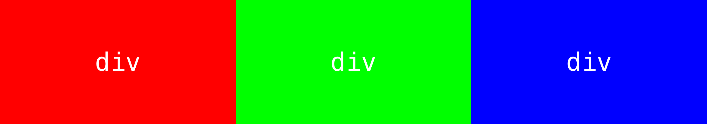
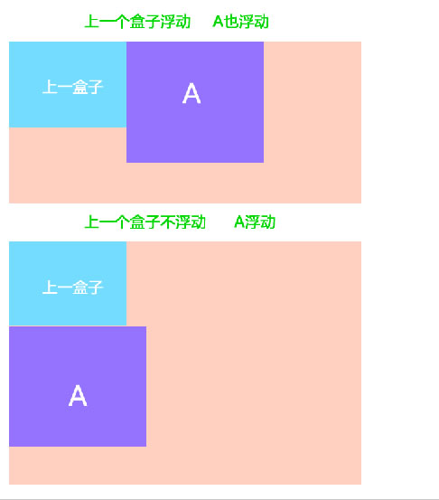
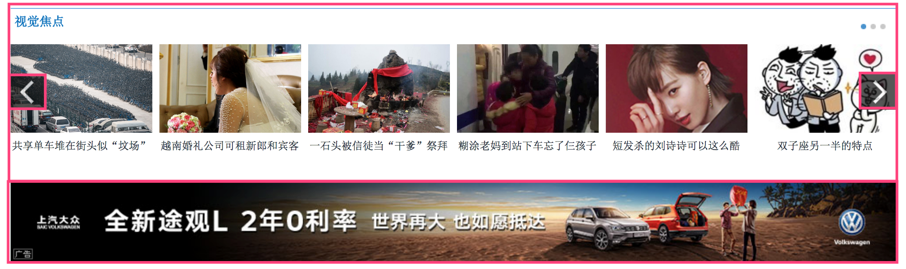

1.浮动
网页布局的核心就是用 CSS 来摆放盒子。
CSS 提供了 3 种机制来设置盒子的摆放位置，分别是普通流（标准流）、浮动和定位
| 三种机制 | 说明 |
|---|---|
| 普通流 | 块级元素会独占一行，从上向下顺序排列；行内元素会按照顺序，从左到右顺序排列，碰到父元素边缘则自动换行 |
| 浮动 | 让盒子从普通流中浮起来,主要作用让多个块级盒子一行显示 |
| 定位 | 将盒子定在浏览器的某一个位置（CSS 离不开定位，特别是后面的 js 特效） |
1.1 浮动的诞生
我们首先要思考以下2个布局中最常见的问题？
如何让多个盒子(div)水平排列成一行？

如何实现盒子的左右对齐？

行内块（inline-block）的缺陷：
- 它可以实现多个元素一行显示，但是中间会有空白缝隙，不能满足以上第一个问题
- 它不能实现以上第二个问题，盒子左右对齐
因为一些网页布局要求，标准流不能满足我们的需要了，因此我们需要浮动来完成网页布局。
1.2 浮动简介
元素的浮动是指设置了浮动属性的元素：1. 脱离标准普通流的控制、2.移动到指定位置
1
2
3
选择器 {
float: 属性值;
}
| 属性值 | 描述 |
|---|---|
| none | 元素不浮动（默认值） |
| left | 元素向左浮动 |
| right | 元素向右浮动 |
浮动——漂浮在普通流的上面。 脱离标准流， 俗称 “脱标” 。

1
2
3
4
5
6
7
8
9
10
11
.box1 {
width: 200px;
height: 200px;
background-color: rgba(255, 0, 0, 0.5);
float: left;
}
.box2 {
width: 150px;
height: 300px;
background-color: skyblue;
}
float属性会让盒子漂浮在标准流的上面，所以第二个标准流的盒子跑到浮动盒子的底下了- 浮动的盒子，把自己原来的位置漏给下面标准流的盒子，就是不占有原来位置
- 任何元素都可以浮动。浮动元素会生成一个块级框(可以操作间距、大小等属性)
| 特点 | 说明 |
|---|---|
| 浮 | 加了浮动的盒子是浮起来的，漂浮在其他标准流盒子的上面。 |
| 漏 | 加了浮动的盒子是不占位置的，它原来的位置漏给了标准流的盒子。 |
| 特 | 特别注意：浮动元素会改变display属性， 类似转换为了行内块，但是元素之间没有空白缝隙 |
1.3 浮动的扩展
1). 浮动元素与父盒子的关系
- 子盒子的浮动参照父盒子对齐
- 不会与父盒子的边框重叠，也不会超过父盒子的内边距


2). 浮动元素与兄弟盒子的关系
在同一个父级盒子中，如果前一个兄弟盒子是：
- 浮动的，那么当前盒子会与前一个盒子的顶部对齐；
- 普通流的，那么当前盒子会显示在前一个兄弟盒子的下方

相当重要的一句话：浮动只会影响当前的或者是后面的标准流盒子，不会影响前面的标准流
建议：如果一个盒子里面有多个子盒子，如果其中一个盒子浮动了，其他兄弟也应该浮动。防止引起问题**
2.清除浮动
2.1 清除浮动的原因
父级盒子很多情况下不方便给高度，这样，父盒子的高度就由子盒子撑起来。然而，子盒子浮动之后就不占有位置，导致父级盒子高度为0，影响下面的标准流盒子。


本质： 清除浮动主要为了解决父级元素因为子级浮动引起内部高度为0 的问题。
清除浮动之后， 父级就会根据浮动的子盒子自动检测高度。父级有了高度，就不会影响下面的标准流了
2.2 清除浮动的方法
在CSS中，clear属性用于清除浮动。
1
2
3
选择器 {
clear:属性值;
}
| 属性值 | 描述 |
|---|---|
| left | 不允许左侧有浮动元素（清除左侧浮动的影响） |
| right | 不允许右侧有浮动元素（清除右侧浮动的影响） |
| both | 同时清除左右两侧浮动的影响 |
但是我们实际工作中， 几乎只用 clear: both;
1). 父级添加overflow属性方法
1
可以给父级添加： overflow为 hidden| auto| scroll 都可以实现。
优点： 代码简洁
缺点： 内容增多时候容易造成不会自动换行导致内容被隐藏掉，无法显示需要溢出的元素。
2). 使用after伪元素清除浮动
:after 方式为空元素额外标签法的升级版，好处是不用单独加标签了
使用方法：
1
2
3
.clearfix:after { content: ""; display: block; height: 0; clear: both; visibility: hidden; }
.clearfix {*zoom: 1;} /* IE6、7 专有 */
- 优点： 符合闭合浮动思想 结构语义化正确
- 缺点： 由于IE6-7不支持:after，使用 zoom:1触发 hasLayout。
- 代表网站： 百度、淘宝网、网易等
3). 使用双伪元素清除浮动
使用方法：
1
2
3
4
5
6
7
8
9
10
.clearfix:before,.clearfix:after {
content:"";
display:table;
}
.clearfix:after {
clear:both;
}
.clearfix {
*zoom:1;
}
- 优点： 代码更简洁
- 缺点： 由于IE6-7不支持:after，使用 zoom:1触发 hasLayout。
- 代表网站： 小米、腾讯等
4). 额外标签法(隔墙法)
1
是W3C推荐的做法是通过在浮动元素末尾添加一个空的标签例如 <div style=”clear:both”></div>，或则其他标签br等亦可。
- 优点： 通俗易懂，书写方便
- 缺点： 添加许多无意义的标签，结构化较差。
2.3 清除浮动总结
pink老师告诉你我们以后什么时候用清除浮动呢？
- 父级没高度
- 子盒子浮动了
- 影响下面布局了，我们就应该清除浮动了。
| 清除浮动的方式 | 优点 | 缺点 |
|---|---|---|
| 额外标签法（隔墙法） | 通俗易懂，书写方便 | 添加许多无意义的标签，结构化较差。 |
| 父级overflow:hidden; | 书写简单 | 溢出隐藏 |
| 父级after伪元素 | 结构语义化正确 | 由于IE6-7不支持:after，兼容性问题 |
| 父级双伪元素 | 结构语义化正确 | 由于IE6-7不支持:after，兼容性问题 |
后面两种伪元素清除浮动，大家暂且会使用就好， 深入原理，我们后面学完伪元素再讲。
3.定位
定位即将盒子定在某一个位置 ，自由的漂浮在其他盒子(包括标准流和浮动)的上面 。
所以，我们脑海应该有三种布局机制的上下顺序:
1
标准流在最底层 (海底) ------- 浮动 的盒子 在 中间层 (海面) ------- 定位的盒子 在 最上层 （天空）
定位也是用来布局的，它有两部分组成：定位 = 定位模式 + 边偏移
3.1 边偏移
简单说， 我们定位的盒子，是通过边偏移来移动位置的。在 CSS 中，通过 top、bottom、left 和 right 属性定义元素的边偏移：（方位名词）
| 边偏移属性 | 示例 | 描述 |
|---|---|---|
top | top: 80px | 顶端偏移量，定义元素相对于其父元素上边线的距离。 |
bottom | bottom: 80px | 底部偏移量，定义元素相对于其父元素下边线的距离。 |
left | left: 80px | 左侧偏移量，定义元素相对于其父元素左边线的距离。 |
right | right: 80px | 右侧偏移量，定义元素相对于其父元素右边线的距离 |
定位的盒子有了边偏移才有价值。 一般情况下，凡是有定位地方必定有边偏移。
3.2 定位模式 (position)
在 CSS 中，通过 position 属性定义元素的定位模式，语法如下：
1
2
3
选择器 {
position: 属性值;
}
定位模式是有不同分类的，在不同情况下，我们用到不同的定位模式。
| 值 | 语义 |
|---|---|
static | 静态定位 |
relative | 相对定位 |
absolute | 绝对定位 |
fixed | 固定定位 |
1）静态定位(static) - 了解
- 静态定位是元素的默认定位方式，无定位的意思。它相当于 border 里面的none， 不要定位的时候用。
- 静态定位 按照标准流特性摆放位置，它没有边偏移。
- 静态定位在布局时我们几乎不用的
2）相对定位(relative) - 重要
相对定位是元素相对于它 原来在标准流中的位置 来说的。（自恋型）
效果图：

相对定位的特点：（务必记住）
- 相对于 自己原来在标准流中位置来移动的
- 原来在标准流的区域继续占有，后面的盒子仍然以标准流的方式对待它。（区别：浮动就不占用以前的位置）
3）绝对定位(absolute) - 重要
绝对定位是元素以带有定位的父级元素来移动位置 （拼爹型）
完全脱标 —— 完全不占位置
父元素没有定位，则以浏览器为准定位（Document 文档）。

父元素要有定位

- 将元素依据最近的已经定位（绝对、固定或相对定位）的父元素（祖先）进行定位。

绝对定位的特点：（务必记住）
- 绝对是以带有定位的父级元素来移动位置 （拼爹型）。** 如果父级都没有定位，则以浏览器文档为准移动位置**
- 不保留原来的位置，完全是脱标的。（区别：相对定位不脱标，绝对定位脱标）
用法：
因为绝对定位的盒子是拼爹的，所以要和父级搭配一起来使用。
定位口诀 —— 子绝父相，即子级是绝对定位，父级要用相对定位。
疑问：为什么在布局时，子级元素使用绝对定位时，父级元素就要用相对定位呢？
观察下图，思考一下在布局时，左右两个方向的箭头图片以及父级盒子的定位方式。


分析：
- 方向箭头叠加在其他图片上方，应该使用绝对定位，因为绝对定位完全脱标，完全不占位置。
- 父级盒子应该使用相对定位，因为相对定位不脱标，后续盒子仍然以标准流的方式对待它。
- 如果父级盒子也使用绝对定位，会完全脱标，那么下方的广告盒子会上移，这显然不是我们想要的。
结论：父级要占有位置，子级要任意摆放，这就是子绝父相的由来。
4）固定定位(fixed) - 重要
固定定位是绝对定位的一种特殊形式：
- 完全脱标 —— 完全不占位置；
- 只认浏览器的可视窗口 ——
浏览器可视窗口 + 边偏移属性来设置元素的位置；
1
2
> 固定定位跟父元素没有任何关系，单独使用的
> 不随滚动条滚动

提示：IE 6 等低版本浏览器不支持固定定位。
3.3 定位扩展
1） 绝对定位的盒子居中
注意：绝对定位/固定定位的盒子不能通过设置 margin: auto 设置水平居中**。
在使用绝对定位时要想实现水平居中，可以按照下图的方法：

left: 50%;：让盒子的左侧移动到父级元素的水平中心位置；margin-left: -100px;：让盒子向左移动自身宽度的一半。
盒子居中定位示意图

2） 堆叠顺序（z-index）
在使用定位布局时，可能会出现盒子重叠的情况。加了定位的盒子，默认后来者居上， 后面的盒子会压住前面的盒子。
应用 z-index 层叠等级属性可以调整盒子的堆叠顺序。如下图所示：

z-index 的特性如下：
- 属性值：正整数、负整数或 0，默认值是 0，数值越大，盒子越靠上；
- 如果属性值相同，则按照书写顺序，后来居上；
- 数字后面不能加单位。
注意：z-index 只能应用于相对定位、绝对定位和固定定位的元素，其他标准流、浮动和静态定位无效。
3） 定位改变display属性
前面我们讲过， display 是 显示模式， 可以改变显示模式有以下方式:
- 可以用inline-block 转换为行内块
- 可以用浮动 float 默认转换为行内块（类似，并不完全一样，因为浮动是脱标的）
- 绝对定位和固定定位也和浮动类似， 默认转换的特性 转换为行内块。
所以说， 一个行内的盒子，如果加了浮动、固定定位和绝对定位，不用转换，就可以给这个盒子直接设置宽度和高度等。
同时注意：
浮动元素、绝对定位(固定定位）元素的都不会触发外边距合并的问题。 （我们以前是用padding border overflow解决的）
也就是说，我们给盒子改为了浮动或者定位，就不会有垂直外边距合并的问题了。
3.4 定位小结
| 定位模式 | 是否脱标占有位置 | 移动位置基准 | 模式转换（行内块） | 使用情况 |
|---|---|---|---|---|
| 静态static | 不脱标，正常模式 | 正常模式 | 不能 | 几乎不用 |
| 相对定位relative | 不脱标，占有位置 | 相对自身位置移动 | 不能 | 基本单独使用 |
| 绝对定位absolute | 完全脱标，不占有位置 | 相对于定位父级移动位置 | 能 | 要和定位父级元素搭配使用 |
| 固定定位fixed | 完全脱标，不占有位置 | 相对于浏览器移动位置 | 能 | 单独使用，不需要父级 |
注意：
- 边偏移需要和定位模式联合使用，单独使用无效；
top和bottom不要同时使用；left和right不要同时使用。
4.网页布局总结
一个完整的网页，有标准流 、 浮动 、 定位 一起完成布局的。每个都有自己的专门用法。
1). 标准流
可以让盒子上下排列 或者 左右排列的
2). 浮动
可以让多个块级元素一行显示 或者 左右对齐盒子 浮动的盒子就是按照顺序左右排列
3). 定位
定位最大的特点是有层叠的概念，就是可以让多个盒子 前后 叠压来显示。 但是每个盒子需要测量数值。